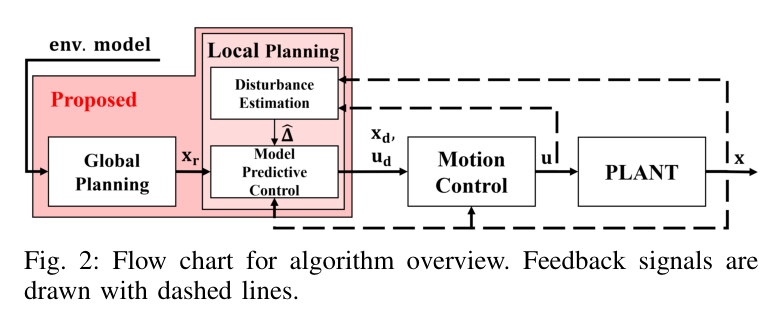
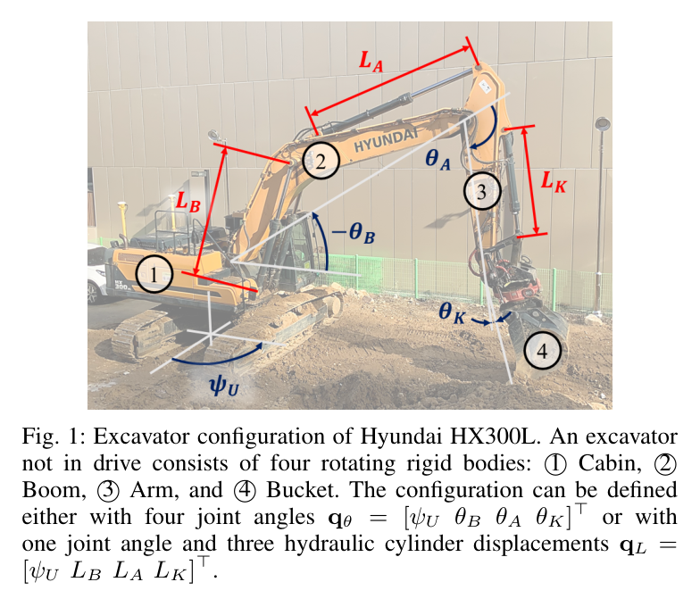
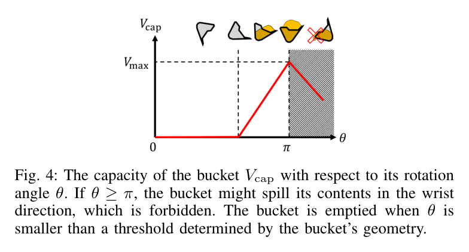
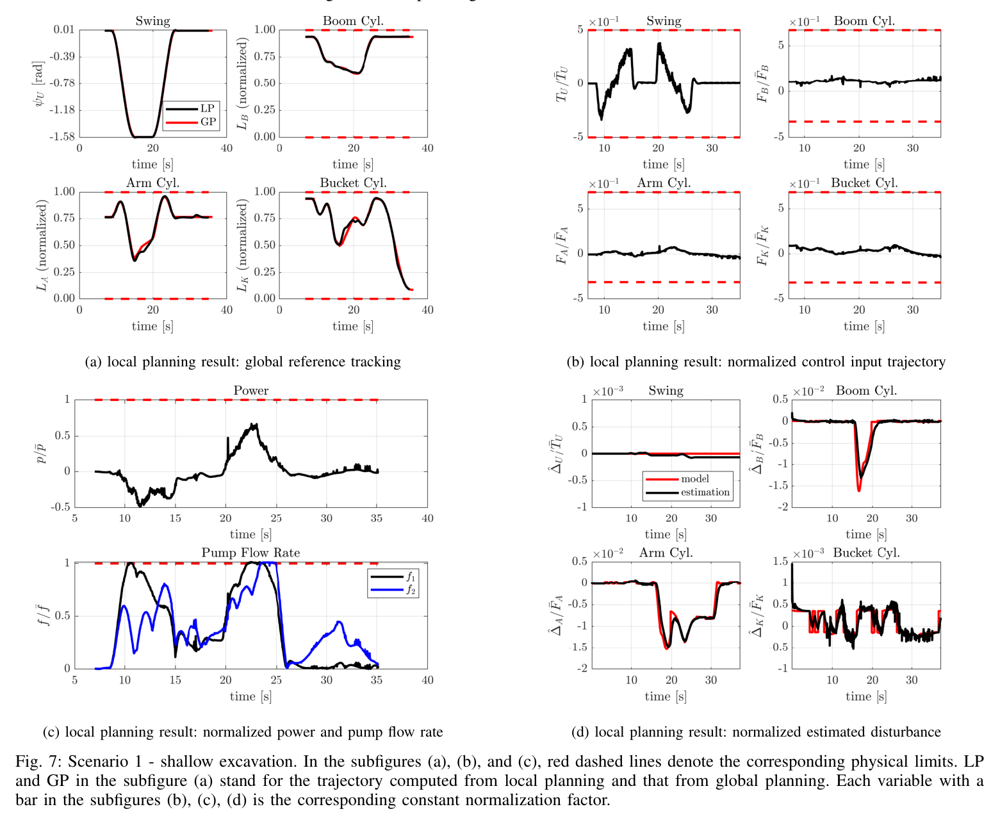
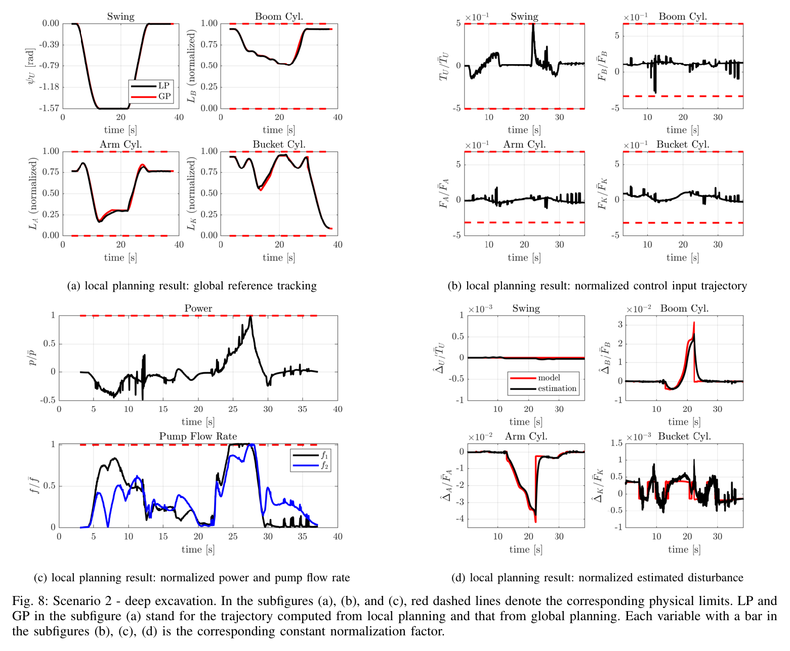

원문 MD:2021 Real-time motion planning of a hydraulic excavator using trajectory optimization and model predictive control - 서울대원본 PDF:2021 Real-time motion planning of a hydraulic excavator using trajectory optimization and model predictive control - 서울대.pdf
한줄 요약
유압 굴착기의 실시간 궤적 계획을 위해 global planner (trajectory optimization)와 local planner (MPC + disturbance estimation)를 통합한 프레임워크를 제안하며, force/torque, power, cylinder displacement, flow rate 등 물리적 제약조건을 모두 만족하면서 30 Hz 이상의 실시간 국소 궤적 재계획이 가능함을 시뮬레이션으로 검증하였다. 전역 궤적은 굴착 1회당 1번 계산되는 고정 기준값이다.
1. 연구 배경
1.1 문제 정의
유압 굴착기(hydraulic excavator)의 굴착 작업 자동화에는 다양한 operational constraints (굴착량, 버킷 자세 등)와 physical constraints (force/torque 한계, 펌프 유량 한계, 파워 한계 등)를 동시에 만족하는 궤적 계획이 필요
기존 trajectory optimization 방법은 전체 궤적을 한 번에 offline으로 최적화하므로, 운영 중 발생하는 외란(disturbance) — 토양-버킷 상호작용, 유압 실린더 마찰 — 에 취약
외란으로 인해 최적성 저하는 물론 제약조건 위반(constraint violation)까지 발생 가능
1.2 기존 연구 분류
분류
대표 연구
특징
한계
Trajectory optimization
[6,7,9]
비용함수+제약조건+시스템 동역학 기반 전체 궤적 최적화
Offline 계산, 외란 미대응, 단순 커널 파라미터화
Receding horizon / MPC
[12,13]
이동 수평선 방식 궤적 최적화
[12] 단일 입력 decoupled 동역학만 고려, [13] 연산시간 부족 (~3.3 Hz)
Non-optimization 기반
[1,14-16]
DMP, reachability map, 계층적 제어
제약조건 명시적 고려 불가, feasibility 보장 어려움
1.3 연구 기여 (Contributions)
Global + Local planner 통합: operational constraints와 physical constraints를 모두 고려
축소 차원 global trajectory optimization: 수 초 이내 계산 가능한 문제 정식화
실시간 제약 궤적 생성: 외란 추정 기반 disturbance-aware 실시간 궤적 계획
2. 시스템 및 방법론
2.1 전체 시스템 아키텍처

Fig. 2: 알고리즘 전체 흐름도. Global planner가 환경 모델 기반으로 전역 궤적 xr을 생성하고, Local planner(MPC + 외란 추정)가 이를 실시간 추종하며, Motion Controller가 제어 입력 u를 PLANT에 인가한다. 점선은 피드백 신호를 나타냄.
환경 모델 지면 형상
→
Global Planner Trajectory Optimization
→
Local Planner Disturbance Estimation → MPC
→
Motion Controller FB Linearization PID
→
PLANT 굴착기 동역학 · 상태 피드백
2.2 굴착기 구성 (Hyundai HX300L)

Fig. 1: Hyundai HX300L 굴착기 구성. 4개의 회전 강체로 구성: (1) Cabin, (2) Boom, (3) Arm, (4) Bucket. 관절 각도 qθ와 실린더 변위 qL로 configuration 정의 가능.
Fig. 5: (좌) Phase 2에서의 버킷 궤적 제약조건. 실선은 현재 지표면, 점선은 목표 형상. (우) 버킷 형상이 버킷 팁 궤적을 관통하지 않아야 함(삼각형 충돌 박스). 버킷 회전 각도 θ와 여유 각도 α 표시.
Phase 2 제약조건 요약:
#
제약조건
설명
1
위치 제약
버킷 팁이 관심 영역 내, 목표 표면 위, 지표면 아래에 위치. 시작·종료 시점에는 지표면 위에 놓여야 함 (Phase 1·3과의 접합 조건)
2
단조 증가 θ
버킷 회전각이 단조 증가해야 함 (에너지 효율)
3
양의 여유 각도 α > 0
버킷 팁 외 부분이 지면을 밀지 않도록
4
버킷 몸체 위치
버킷 전체가 팁 경로 위에 위치
5
θ < π
토양 흘림 방지 (Fig. 4 참조)

Fig. 4: 버킷 용량 Vcap과 회전 각도 θ의 관계. θ ≥ π이면 손목 ��향으로 토양이 흘러 장비 고장 위험.
Phases 1 & 3: Bernstein 다항식 파라미터화
Bernstein 다항식:
p(s) = Σk=0n βk C(n,k)sk(1−s)n−k, s ∈ [0,1] (7)
Bernstein 기저를 쓰는 이유 (§III-B): 기저의 convex hull 성질 덕분에 제어점 βk에만 박스 제약을 걸어도 궤적 전체가 qL 범위를 지키고, q̇L의 선형 부등식 제약도 쉽게 반영된다. 시간 미분 계산도 간단해 연산이 빨라진다. 아래 식(8)의 제약이 제어점만으로 표현되는 근거가 바로 이 성질이다.
Phase 간 연속성 (§III): 제어의 연속성을 보장하기 위해, 인접한 phase 사이에서 configuration과 그 미분이 일치해야 한다.
Phases 1, 3의 최적화 문제:
minβk, T ∫0T ½uTWuu dt (8)
s.t. qLl ≤ βk ≤ qLu, q̇Ll ≤ n(βk+1−βk)/T ≤ q̇Lu
Phase 3 추가 제약 (토양 흘림 방지):
θ0 ≤ θ(βk) ≤ π (9)
3.4 Local Planning (MPC)
물리적 제약조건
ul ≤ u ≤ uu (10a)
p = uTq̇L ≤ pu (10b)
Ll ≤ L ≤ Lu (10c)
fi = Ai(sgn(q̇L))Tq̇Labs ≤ fiu, i = 1,2 (10d)
제약
물리적 의미
(10a) Force/torque limit
각 액추에이터의 힘/토크 상하한
(10b) Power limit
유압 펌프의 총 파워 상한 (모든 액추에이터가 동일 파워원 공유)
(10c) Cylinder displacement
실린더 변위의 물리적 상하한
(10d) Pump flow rate
2개 유압 펌프의 유량 제한
외란 추정 (Disturbance Estimation)
모멘텀 기반 외란 추정(momentum-based disturbance estimation):
Fig. 6: 두 시나리오의 global planning 결과. (a) Shallow excavation, (b) Deep excavation. Ground(주황), Target(흰색), Global planner result(녹색), Traversed trajectory(빨강).

Fig. 7: Scenario 1 — Shallow excavation 결과. (a) 전역 궤적 추종, (b) 정규화된 제어 입력, (c) 정규화된 파워 및 펌프 유량, (d) 정규화된 추정 외란. 빨간 점선은 물리적 한계를 나타냄.
주요 결과:
지표
값
Global trajectory 계산 시간
2.1초
Local planning 평균 계산 시간
21.7ms (약 46Hz)
물리적 제약조건 만족
모든 제약조건 충족
외란 추정
버킷 실린더에서 마찰 모델 명확히 관측, 붐/암에서는 토양 상호작용 외란이 더 큼. 추정값(검정)이 모든 축에서 모델 외란(빨강)을 잘 추종 — 외란 추정기 유효성의 직접 근거
목표 형상(target shape)을 관통하지 않도록 넓은 영역에서 궤적 생성
Tip-grading-like motion 발생
Global planning이 의도적으로 물리적 한계를 초과하더라도, local planning에서 제약조건 만족
4.3 Scenario 2 — Deep Excavation (깊은 굴착)

Fig. 8: Scenario 2 — Deep excavation 결과. (a) 전역 궤적 추종, (b) 정규화된 제어 입력, (c) 정규화된 파워 및 펌프 유량, (d) 정규화된 추정 외란.
주요 결과:
지표
값
Global trajectory 계산 시간
1.6초
Local planning 평균 계산 시간
30.2ms (약 33Hz)
물리적 제약조건 만족
모든 제약조건 충족
외란 크기
Scenario 1보다 큰 외란 (버킷이 토양에 더 깊이 침투)
목표 형상이 깊으면 Phase 2에서 삼각형 형태의 궤적 생성하여 굴착 체적 최대화
반복 굴착을 통해 깊은 목표 형상에 점진적으로 도달하는 전략(target-shape-aware excavation-volume-maximizing strategy)
더 큰 외란에도 불구하고 global reference 잘 추종 및 모든 물리적 제약조건 충족
4.4 두 시나리오 비교
항목
Shallow Excavation
Deep Excavation
궤적 형태
넓은 영역 tip-grading
삼각형 체적 최대화
목표 도달
1회 굴착으로 목표 형상 추종 (원문은 pass 수를 명시하지 않음)
반복 굴착으로 점진 도달 (원문 명시)
Global 계산
2.1s
1.6s
Local 계산
21.7ms (46Hz)
30.2ms (33Hz)
외란 크기
상대적 소
상대적 대
제약 만족
O
O
5. 한계 및 향후 연구
논문이 명시한 가정·한계 (원문에 근거가 있는 것):
시뮬레이션만 검증: 실제 굴착기 실험 미수행. 결론이 밝힌 유일한 향후 과제 — “Future work may include validation of the proposed algorithm in actual excavators” (§VI)
단일 굴착 작업(single digging task): 결론이 스스로 범위를 이렇게 한정 (§VI). 단, 반복 굴착은 Scenario 2의 명시적 전략이고 트럭 적재는 Phase 3의 목표 지점으로 이미 포함되어 있다 — 빠진 것은 그 위의 태스크 플래닝이다
환경 사전 지식 가정: 지면 형상(ground shape)을 사전에 안다고 가정. 원문은 라이다·카메라 등 온보드 센서나 토탈스테이션으로 취득 가능하다고 언급 (§V-A)
외란 불변 가정: 짧은 예측 구간에서 외란이 크게 변하지 않는다고 가정 — Δ̂k+1 = Δ̂k. MPC 정식화의 핵심 전제이며 논문이 “assume”이라 적은 유일한 모델링 가정 (§IV-C)
Phase 2 스윙 고정: 버킷 측판(side plate)이 흙을 미는 것을 막기 위해 캐빈을 고정한 채 굴착 궤적을 최적화 (§III-A)
실시간성은 조건부: 전역 계획이 궤적 실행 시간 안에 끝나야 통합 planner가 실시간으로 성립 (§I-B)
전단사 매핑의 유효 범위: 식(1)의 일대일 대응은 물리적으로 가능한 영역 안에서만 성립하며, 그 영역은 국소 계획의 실린더 변위 제약으로 반영 (원문 각주 1)
새 데이터 없이 기존 표만으로 된다. 붐·암은 실린더가 두 핀 사이 삼각형의 한 변이라 잔차가 거의 0으로 떨어질 것이고, 그러면 핀 좌표 없이 유효 기하를 복원해 J·J̇을 해석적으로 얻는다
반나절
④의 단서: 버킷은 4절 링크(사다리꼴)라 삼각형 3파라미터 형태로 맞지 않는다. 버킷만 표를 유지하되, ①에서 “표에서 J̇L을 뽑는다”로 확인되면 np.interp → CubicSpline(C² 연속)으로 교체해 J̇의 계단·스파이크를 없앤다.
6.2 Phase 1·3 시간 배분(T) 단순화의 타당성 검증
배경과 유도는 §3.3 식(7)(8)(9) 콜아웃의 「🔍 시간 배분 단순화 재검토」 참조. 요지는 “우리 방식이 틀렸다”가 아니라 “맞는지 아직 안 재봤다”이며, 재는 데 드는 계산이 스칼라 1개짜리 닫힌 해라는 것이다.
⓪ 착수 전 반드시 확정할 것 (코드 확인, 5분)
이게 정해지지 않으면 아래 ⑤~⑦ 전부가 잘못된 전제 위에 선다.
확인 항목
왜 중요한가
“시간만 재배분”의 정확한 의미 — (A) T = Σ(구간길이 / 구간속도)로 T가 속도 상한의 결과인가, (B) 전체 T는 외부 고정이고 구간 배분만 조정하는가
(A)면 ⑤의 T_cap 정의가 그대로 성립한다. (B)면 T가 물리와 무관한 상수라는 뜻이라 격차가 더 크고, ⑤의 비교 대상 자체를 다시 세워야 한다
0.5 / 0.25 / 0.5의 정체 — phase 1/2/3에 각각 대응하는가, 아니면 phase 1(또는 3) 내부의 구간별 값인가
phase 대응이면 속도 불연속이 논문이 매끄럽게 하라고 명시한 바로 그 두 지점에서 발생한다 (⑦의 판정이 달라짐)
속도 상한 0.5/0.25m/s의 출처
안전 기준인지, 액추에이터 한계 환산인지, 경험값인지. ⑤에서 T*가 더 느리게 나왔을 때 상한을 바꿔도 되는지가 여기서 갈린다
⑤ T* 계산 후 현재 T와 대조 — 이 절의 핵심 작업
곡선 모양 β를 고정한 채로는 T가 스칼라 하나이고 닫힌 해가 있다. 새 솔버·재최적화 불필요.
1) 고정된 Bernstein 곡선을 임의의 기준 T₀ 로 샘플링 (s ∈ [0,1], 균등 N점)
2) 역동역학 2회 평가로 A, G 분리:
G(s) = u |_{q̇=0, q̈=0} ← 중력만 (정적 유지력)
A(s) = T₀² · ( u|_{T₀} − G(s) ) ← 나머지 = 관성·코리올리
3) 사다리꼴 적분 3개:
a = ½∫₀¹ AᵀW_u A ds
b = ∫₀¹ AᵀW_u G ds
c = ½∫₀¹ GᵀW_u G ds
4) T* = √( [ b + √(b² + 12ac) ] / (2c) )
5) T_cap = (현재 방식이 산출하는 실제 소요시간) ← ⓪-(A)/(B)에 따라 정의
6) 비율 r = T* / T_cap 출력
판정 기준 (이 표대로 결론을 적을 것):
r = T*/Tcap
의미
조치
0.9 ~ 1.1
속도 제약이 실제로 binding — 우리 선택이 논문 해와 사실상 일치
§3.3 판정 🟡 → 🟢 승격, 근거 수치와 함께 종결. 코드 변경 없음
r > 1.1
불필요하게 빨리 달려 관성력을 낭비 중
T를 T*로 늘린다. 힘 여유가 생기므로 §3.4 “24% 경고”와 §3.2 Δ̂ 포화가 함께 줄어드는지 확인
r < 0.9
더 빨리 갈 수 있는데 못 가는 중
사이클 타임 손해. ⓪의 “속도 상한 출처”를 근거로 상한 재검토
하지 말 것:
β(곡선 모양)까지 같이 최적화하지 말 것. 식(8)의 완전한 minβ,T를 재현하려 들면 범위가 폭발하고 §3.3의 검증된 형상(운전자 관찰로 고친 2건 포함)이 깨진다. 이번 작업은 β 고정, T만이다.
W_u를 임의로 정하지 말 것. 현재 코드에 힘 가중이 없다면 단위행렬로 두고 그 사실을 결과에 명시한다. 임의 가중은 T*를 원하는 값으로 만들 수 있어 판정이 무의미해진다.
⓪이 미확정인 채로 진행하지 말 것.
⑥ 제약 공간 정합 — 팁 속도 상한이 실린더 속도 상한을 넘는 구간 찾기
현재 상한은 Cartesian 팁 속도인데, (10d) 유량 제약과 논문 식(8)의 속도 제약은 실린더 속도 q̇L이다.
전체 궤적을 훑으며 각 시점에서
q̇_L = J_θ(q_θ) · q̇_θ (또는 표/피팅에서 얻은 dL/dθ 적용)
를 계산하고 아래를 출력:
- max |q̇_L| 을 축별로 → 실린더 속도 상한 대비 몇 %인가
- Σ abs(q̇_L) 의 시계열 → (10d) 펌프 유량 한계를 넘는 구간 비율
- 위반 구간의 자세(θ_B, θ_A, θ_K) 기록 → 어떤 자세에서 터지는가
판정: 위반 구간이 0%면 팁 속도 상한이 충분히 보수적이라는 뜻이므로 이 격차는 닫는다. 0%가 아니면, 전역 기준궤적이 실린더 공간에서 이미 실현 불가능하다는 뜻이고 → 국소 MPC가 매 스텝 밀어내며 따라가는 중 → §3.4 “24% 경고”의 원인 후보로 확정(기존 후보인 “미보정 힘 한계 수치”와 병기).
⑦ 저크(§5 한계 ⑤)의 원인 판별 — 새 실험 불필요, 기존 로그 재분석
⑤ 덜컹거림의 원인으로 ④ MPC horizon 단순화를 1순위로 적어두었으나, 경쟁 가설이 생겼다: 0.5/0.25/0.5 구간별 상수 속도의 경계 불연속.
기존 주행 로그에서 저크(팁 가속도의 시간 미분 또는 q̈_L 변화율)를 뽑고,
phase 전환 시각에 마커를 찍어 분포를 본다.
├ 저크 스파이크가 phase 전환 시점에 국소적으로 몰림
│ → 원인 = 속도 스케줄 불연속.
│ 조치: 경계에서 속도가 이어지도록 시간 배분에 C¹ 연속 조건 추가
│ (논문의 "boundary values chosen ... smooth" 에 해당)
│
└ 저크가 주행 내내 고르게 깔림
→ 원인 = ④ MPC horizon. 기존 1순위 유지
판정 기준: phase 전환 ±0.2초 구간이 전체 저크 에너지의 50% 이상을 차지하면 속도 스케줄이 주원인.
작업 순서와 비용
순서
항목
비용
선행 조건
1
⓪ 코드 확인
5분
—
2
⑦ 저크 판별
30분 (기존 로그)
⓪
3
⑥ 제약 공간 점검
반나절
⓪, §6.1-① (JL 출처)
4
⑤ T* 계산
반나절
⓪
⑦을 먼저 두는 이유: 새 데이터가 필요 없고, 결과가 §5 한계 ⑤의 1순위 후보를 바꿀 수 있어 다른 개선 작업의 우선순위 자체를 재배치하기 때문이다.
한마디로 정리
Global + Local planner 통합 프레임워크로 유압 굴착기의 실시간 궤적 계획 구현
Force/torque, power, cylinder displacement, flow rate 등 4가지 물리적 제약조건 동시 충족 달성
Feedback linearization으로 비선형 MPC를 선형화하여 30Hz 이상 실시간 연산 달성
모멘텀 기반 외란 추정으로 마찰 및 토양 상호작용 disturbance-aware planning 구현
Shallow/deep excavation 두 시나리오에서 제약 만족 + 전역 궤적 추종 검증 완료